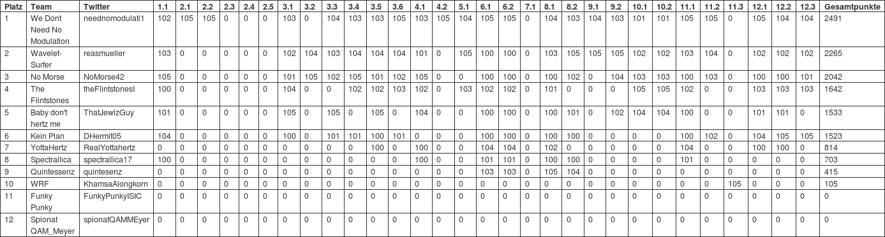

Thanksgiving Dinner / ISIC17 Gewinner / Weihnachts-AWB
Letzten Donnerstag hatten wir unser alljährliches Thanksgiving Event und wir wollen allen Teilnehmenden und Mitwirkenden dafür danken, dass es mal wieder ein toller Abend geworden ist! Besonderer Dank geht natürlich an Sebastian Koslowski und Stephan Ehrhard von Procitec, die uns in einem interessanten Vortrag erzählt haben, wie Funksignalanalyse in der Praxis funktioniert.
Außerdem haben wir an diesem Abend die Sieger der vierten IEEE Signal Intelligence Challenge gekürt, auch hier nochmal herzlichen Glückwunsch an alle Teams, die mitgemacht haben! Insgesamt haben 12 Teams teilgenommen und uns wurden über 1000 Lösungsvorschläge geschickt. Dank unserer großzügigen Sponsoren konnten wir Preise im Gesamtwert von über 2000€ vergeben, darunter ein USRP B200mini (gespendet von Ettus Research) sowie mehrere HackRFs (gespendet von Procitec). Hier nun das finale Ranking:
{kind=link}
Wir gratulieren den Teams "auf dem Treppchen": "We Don't Need No Modulation" (Platz 1, 2491 Punkte), "Wavelet-Surfer" (Platz 2, 2265 Punkte) und "No Morse" (Platz 3, 2042 Punkte) haben den Wettbewerb klar für sich entscheiden können und dürfen sich nun über SDR-Hardware freuen!

Da nach der Challenge gleichzeitig auch vor der Challenge ist, wollen wir die Gelegenheit nutzen, euch zu unserem Weihnachts-AWB am 4.12.2017 um 18:30 Uhr im CEL einzuladen! Auf der Agenda steht eine (kurze) Feedbackrunde zur ISIC sowie Restevernichtung vom Truthahndinner (== Bier!) Im Anschluss wollen wir dann je nach Uhrzeit und Wetter noch eine Runde Glühwein auf dem Weihnachtsmarkt trinken. Also kommt vorbei!
PS: Alle Studierenden, die bei der ISIC17 mitgemacht haben und noch keine Zeit hatten, unsere Umfrage auszufüllen, haben nach wie vor die Möglichkeit dazu! Hier nochmal der Link: https://goo.gl/forms/6znMz0Fx9V8zCMX33